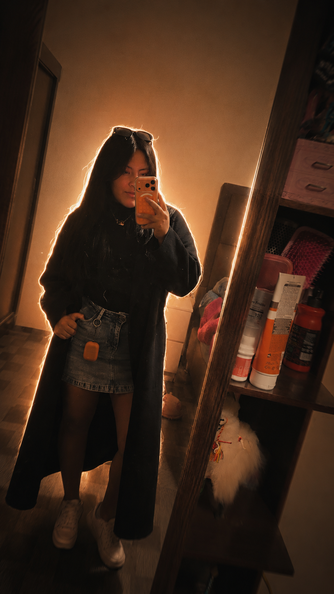
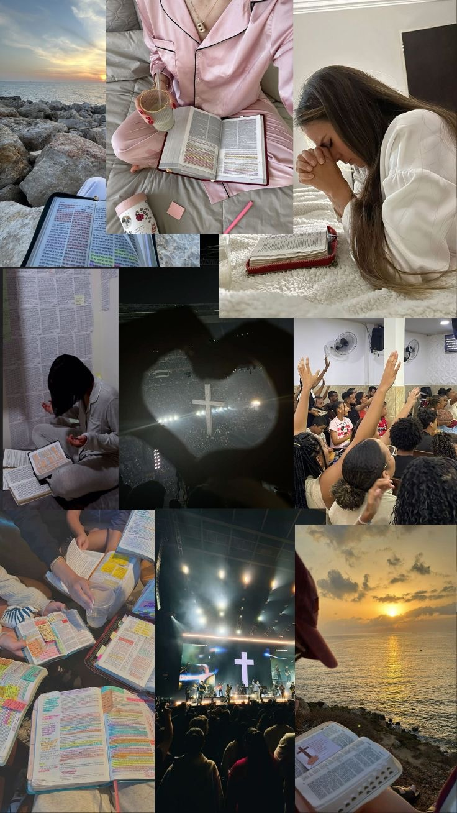
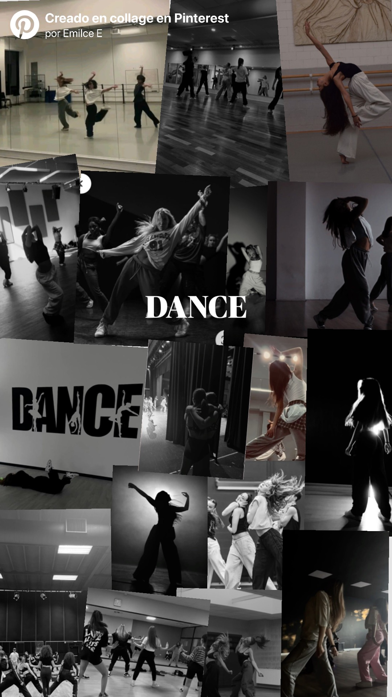

Presentación

Nombre: Emilce Jael Flores Gutiérrez
"Siempre estoy dispuesta a aprender, descubrir y experimentar cosas nuevas."
Sobre mí
Hola, soy Emilce Jael Flores Gutiérrez, estudiante de Diseño Digital en la UCB.
Soy una persona que le gusta aprender de todo, le gusta bailar y siempre está dispuesta a ayudar a los demás. También me gusta conocer y descubrir nuevos intereses, experimentar cosas nuevas y aprender de cada experiencia.
Me gusta rodearme de personas que aporten a mi vida valores y cosas que todavía me falta aprender.
Gustos e intereses
- Danza
- Repostería
- Pasar tiempo con mis amigos y familia
- Manualidades
Algo que me inspira
Mi fe

Mi vida cristiana es una de las cosas que más me inspira. Elegir seguir a Dios y aprender de su Palabra me ayuda a crecer como persona, mantener mis valores y seguir adelante en cada etapa de mi vida.
La danza

La danza es otra de mis grandes pasiones. Especialmente me gusta la bachata por sus movimientos y su fluidez. Bailar me permite expresarme, disfrutar la música y dejarme llevar por el ritmo, haciendo que cada movimiento tenga su propio forma de expresión.